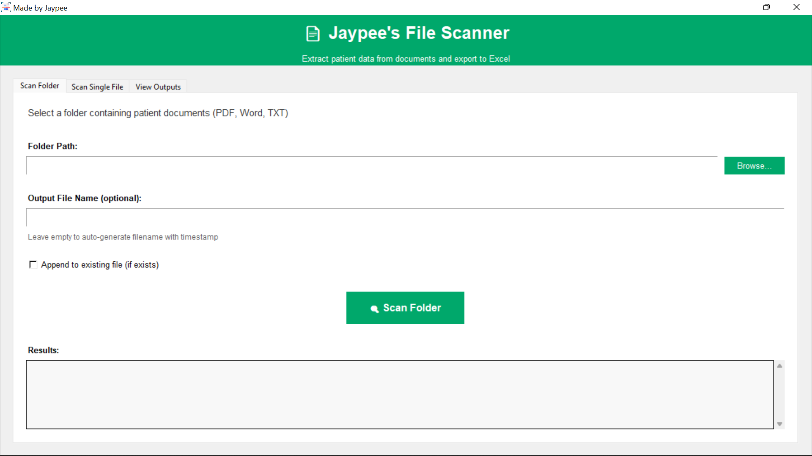
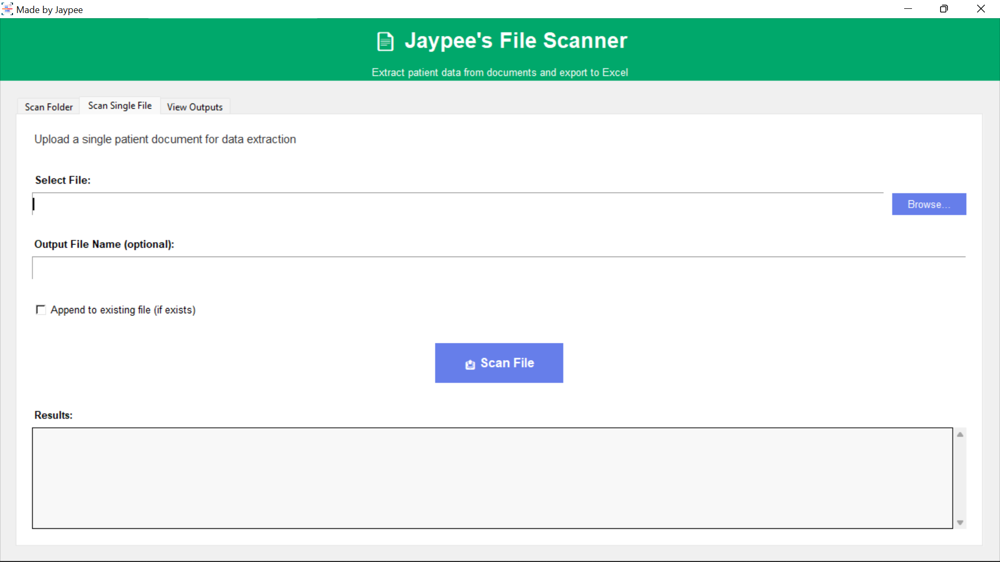
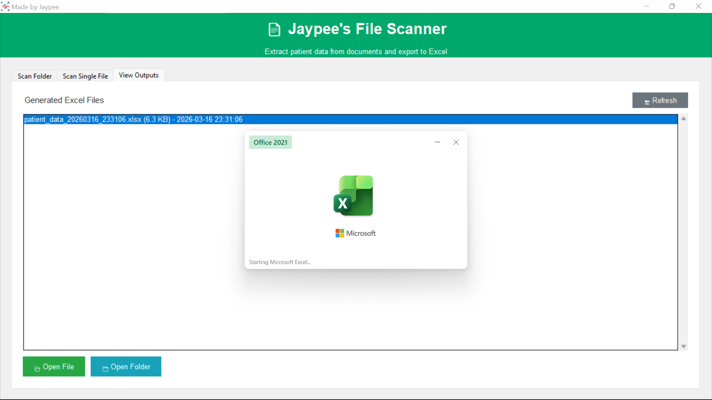
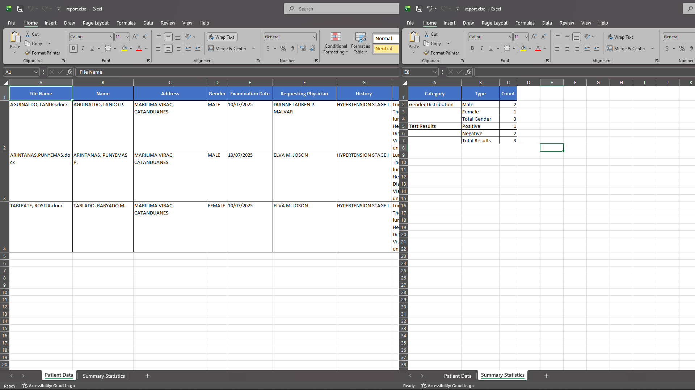

Automated Document Data Extraction and Reporting System
This project automates the extraction and organization of data from multiple documents into structured Excel reports. It scans files, identifies relevant information, and generates both detailed tables and summary statistics, reducing manual work while improving accuracy and efficiency.

The multi-tab desktop interface with sections for folder scanning, single-file processing, and output management.

Browse dialogs for selecting individual files or entire folders of medical documents for batch processing.

This interface demonstrates the application’s core functionality, allowing users to scan folders or individual files and automatically extract relevant patient data into a structured format. The system then generates an organized Excel report, reducing manual data entry by combining file parsing, extraction, and reporting into a single workflow..

This output shows the processed data after extraction and transformation. The first sheet displays structured patient information, while the second sheet summarizes the data by automatically categorizing and tallying key metrics, enabling quick insights without manual sorting or counting.